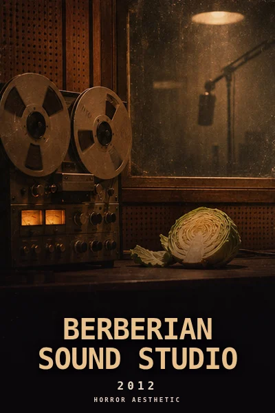

Студия «Берберян»Berberian Sound Studio (2012)
Режиссёр: Питер Стриклэнд · Психологический, Джалло, Кино о киноDirector: Peter Strickland · Psychological, Giallo, Film about film
Тихий британский звукорежиссёр попадает на итальянскую студию, где делают кровавое джалло.A quiet British sound engineer joins an Italian studio making a bloody giallo.
Гилдерой, скромный специалист по звуку, едет в Италию записывать шумы для фильма «Конная воронка». Режиссёр кричит, продюсеры давят, а на экране мы ни разу не видим самого фильма: только то, как для него рубят кочаны и бьют арбузы.
Стриклэнд делает чудо из ничего. Мы слышим насилие, а видим овощи и микрофоны, и воображение дорисовывает остальное страшнее любой картинки. Тоби Джонс играет человека, которого студия понемногу стирает.
Фильм это письмо любви к джалло и аналоговой записи, а ещё портрет того, как тяжёлая работа с жестокостью меняет человека. Финал расплывается и оставляет вопрос, кто здесь на самом деле жертва.
Тем, кто любит «Глубокие красные тона», «Опера» и «Кровь и чёрные кружева», будет интересно. Тем, кто ждёт крови на экране, тут нечего ловить.
Gilderoy, a modest sound specialist, travels to Italy to record effects for a film called The Equestrian Vortex. The director shouts, the producers press, and we never see the film itself: only how cabbages are chopped and melons smashed for it.
Strickland makes a marvel from nothing. We hear violence and see vegetables and microphones, and imagination paints the rest worse than any picture. Toby Jones plays a man the studio slowly erases.
The film is a love letter to giallo and analogue recording, and also a portrait of how hard work with cruelty changes a person. The ending blurs and leaves the question of who the victim really is.
Those who like Deep Red, Opera and Blood and Black Lace will find it interesting. Those who expect blood on screen have nothing to catch here.